IMMERSIVE EXPERIENCE · UNITY VR
ExplorEAR
ExplorEAR reimagines anatomy as sensory storytelling. By blending biological metaphors from nature with dreamlike landscapes, it transforms the microscopic into the cosmic, helping users sense their bodies differently.
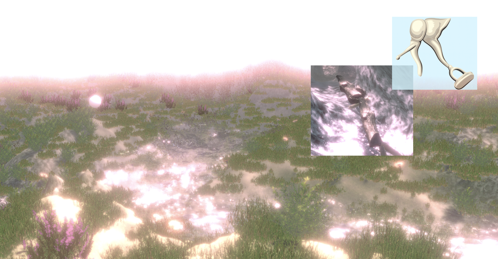
Curiosity
I noticed that most people, including myself, wear headphones daily without fully understanding the ear's internal structures, how they function, or how prolonged listening may affect hearing.
Initial Concept
My initial goal was to create an educational healthcare experience where users could explore the ear's structures and functions through interactive navigation and instructional pop-ups.
Early Explorations
The following images are my concept illustrations. However, testing revealed two main issues:
- “Anatomical visuals felt too clinical and uncanny in VR.”
- “The 'educational' framing created pressure rather than curiosity.”
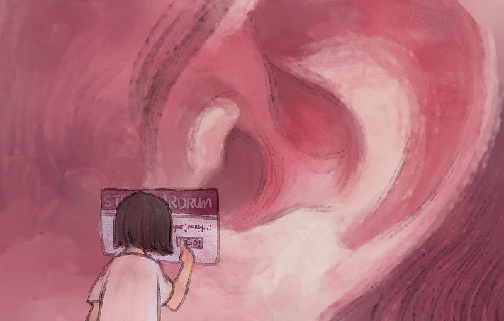
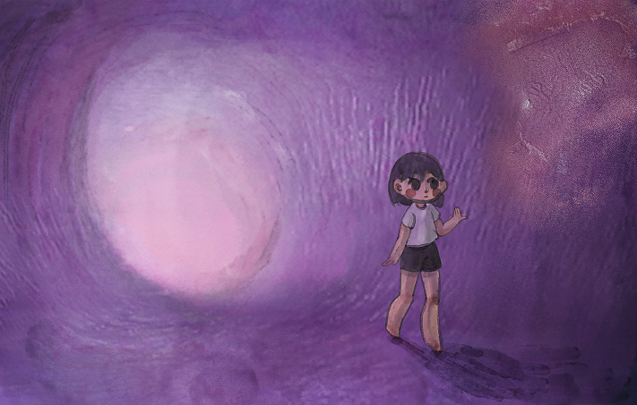
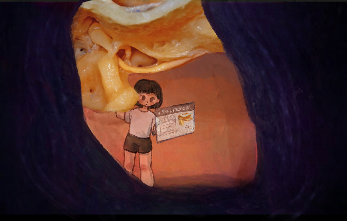
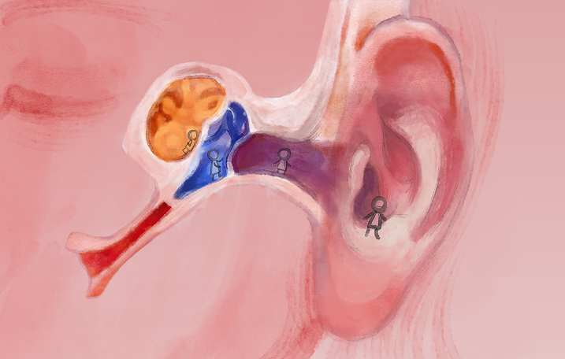
Concept
Inspired by Ask the StoryBots' playful abstraction of anatomy, I began to explore poetic ways to represent the ossicles—seeing them like branching trees and natural forms. Tamiko Thiel's works further influenced my aesthetic, leading me to reimagine the body's microscopic structures through the lens of nature.
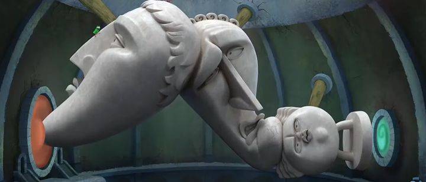
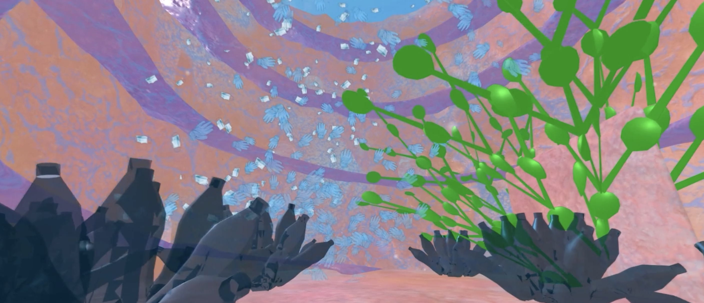
Translating Anatomy into Natural Landscapes
I combined anatomical references with natural materials, using wooden ossicles and layered shaders to evoke organic texture. Adjusted lighting and filters create a fluid, dreamlike atmosphere that transforms microscopic forms into immersive space.
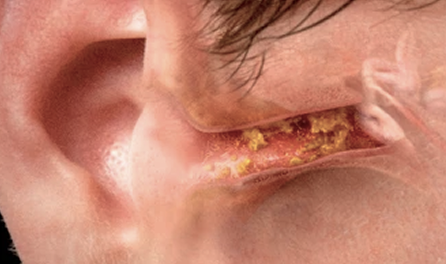
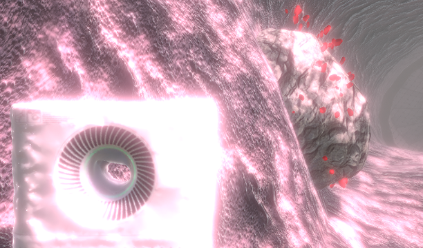
1. The ear canal becomes a textured tunnel: skin and ear wax forming stones in a natural cave.
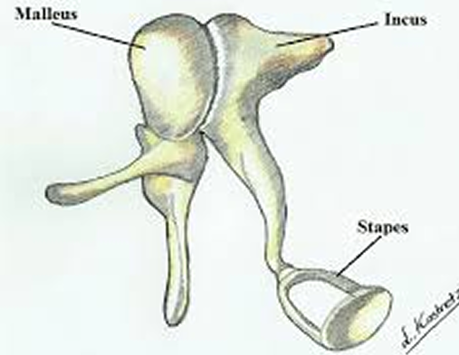
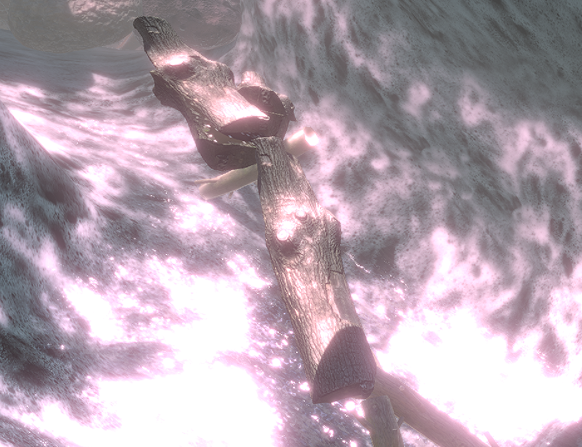
2. Ossicles turn into branching wood, surrounded by flowing water that hints at trapped fluid and muffled hearing.
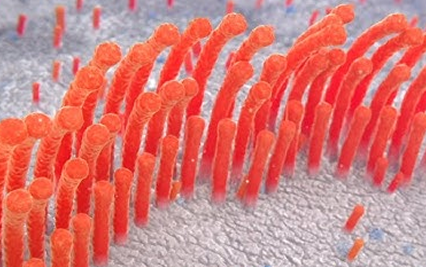
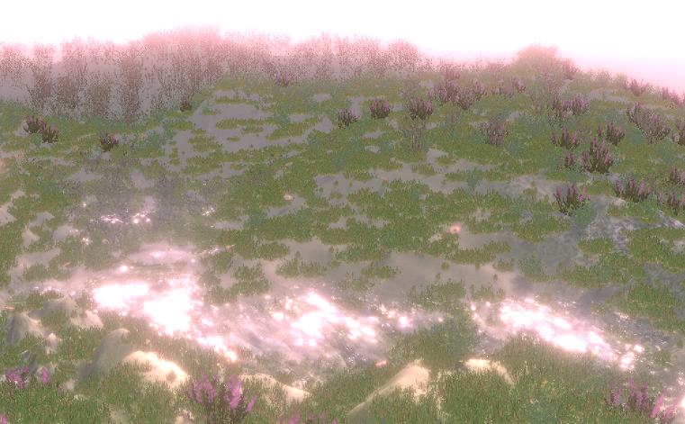
3. Hair cells drift like grass in lymphic water, evoking the quiet rhythm of hearing within.
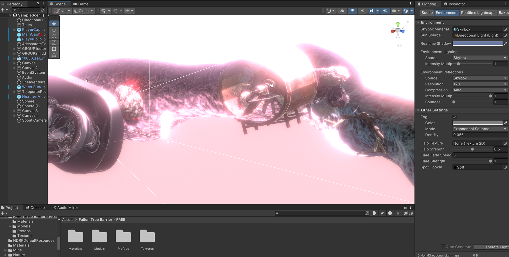
Crafted and sourced assets shape a tunnel-like outer and middle ear, while the inner ear opens into a terrain formed through layered textures and spatial composition.
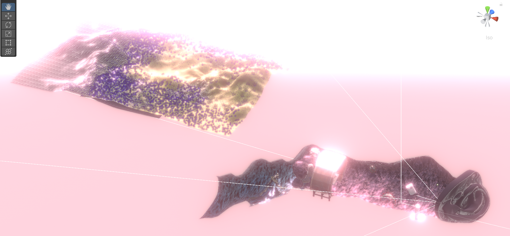
Key Process Stages
Objectives
- Reimagine anatomy through nature.
- Translate sound into spatial sensation.
- Evoke empathy through embodied perception.
“How can immersive VR make people sense their own bodies differently?”
3D Modeling & Sculpting
Modeled the ear and tunnel in Blender as environment assets.
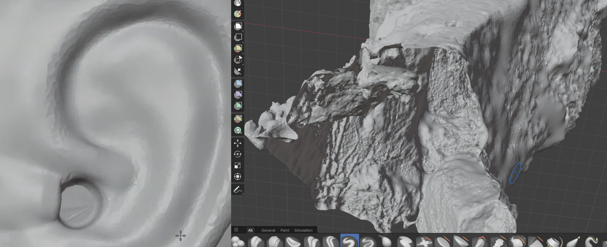
Interaction Coding - Teleportation
Hidden teleportation triggers guide players through transitions intuitively.
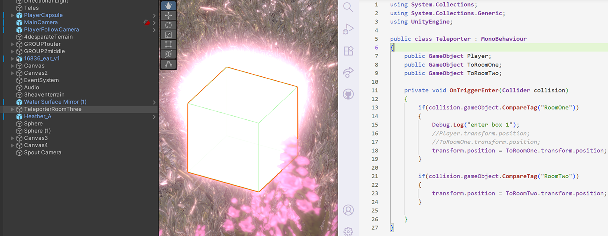
Interaction Coding - Popup UI
Approaching triggers shard-like UI cues that evoke unconscious listening.
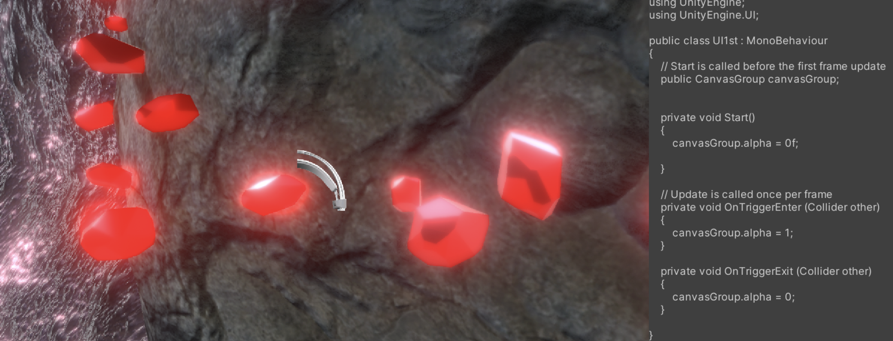
Sound Design
Layered audio in Audacity slowly distorts, reflecting fatigue.
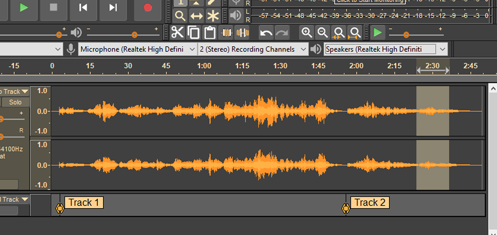
Iteration & Testing
Testing spatial comfort & pacing with headset & projection.
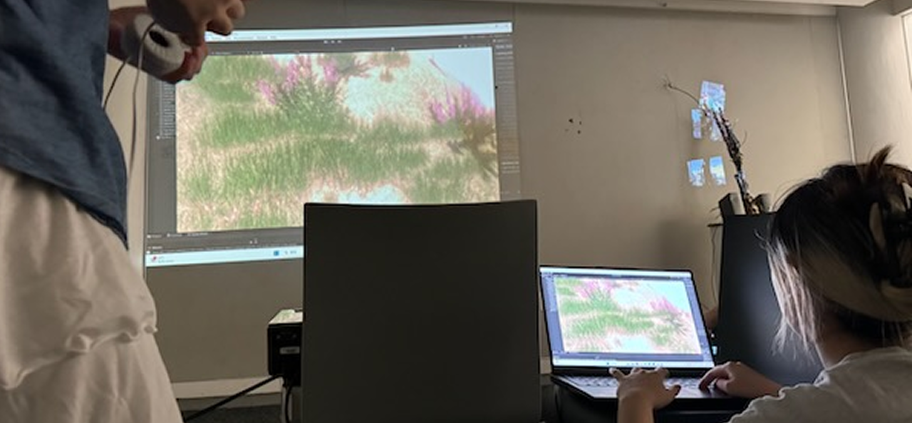
Final Experience
OUTER EAR: Rocky tunnel with mineral-like formations (earwax).
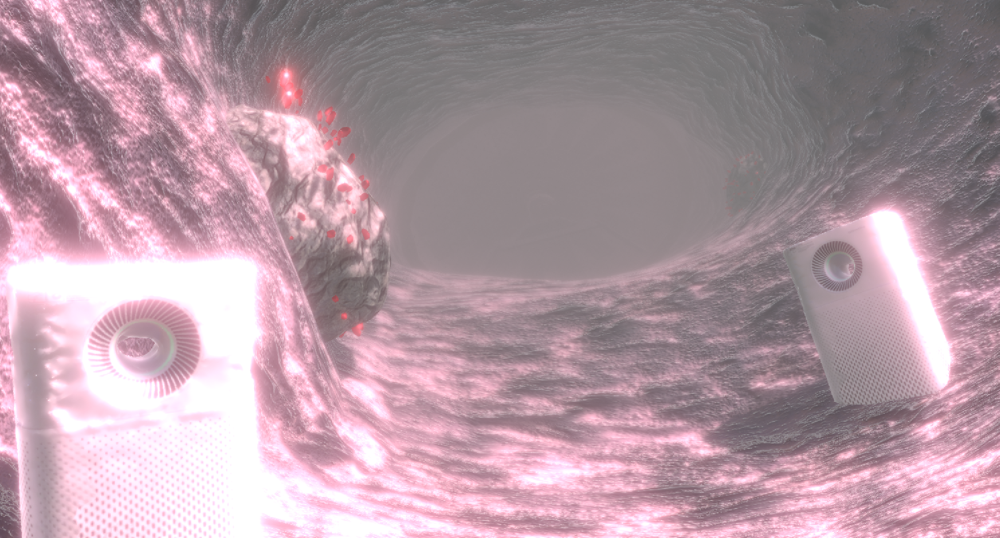
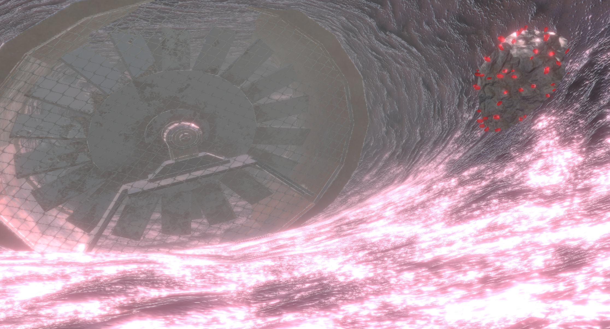
MIDDLE EAR: Wooden bridge of tree stumps (ossicles).
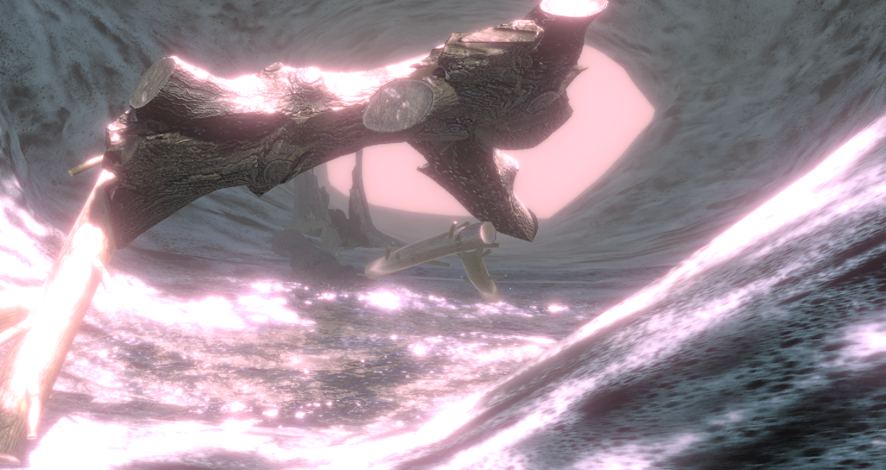
INNER EAR: Field of swaying grass and flowers (hair cells).

Reflection
ExplorEAR reimagines anatomy as sensory storytelling. By blending biological metaphors with dreamlike landscapes, the project transforms the microscopic into the cosmic, helping users sense their own bodies differently. I learned that empathy doesn't always come from information, but from experience. When education becomes play, awareness turns into connection.